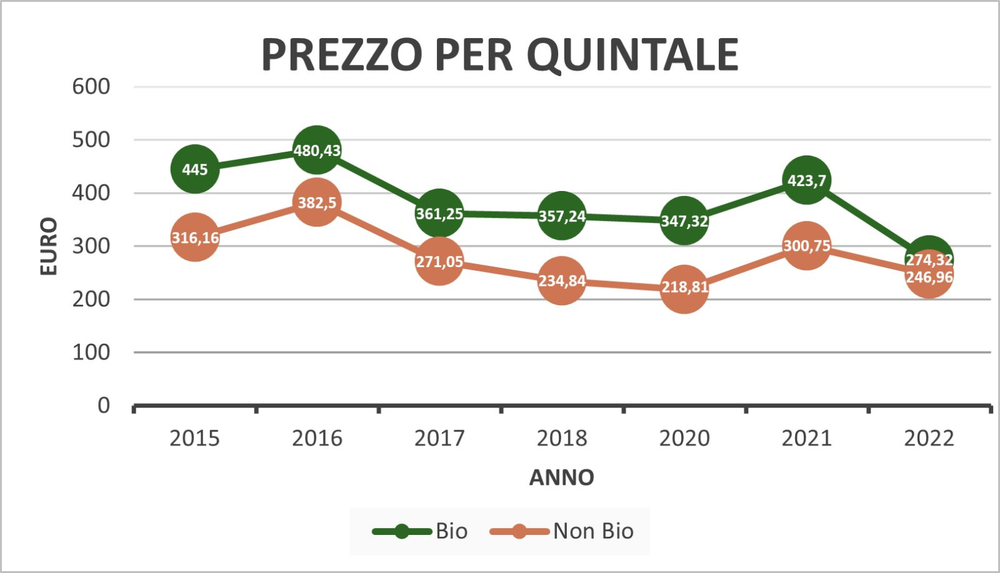

NOCCIOLE E CAMBIAMENTO CLIMATICO
Dalla Tuscia alle Langhe

NOCCIOLE E CAMBIAMENTO CLIMATICO
Dalla Tuscia alle Langhe
Presentazione e Dati Raccolti
Che cosa abbiamo osservato?
Grazie alle ricerche online, le informazioni avute tramite le interviste e i dati che ci sono stati forniti, possiamo provare a marcare gli elementi
che accomunano le due zone e quelli che li differenziano.
Durante lo scorrimento di questa pagina è possibile vedere i grafici che abbiamo costruito con i valori dati dalle aziende, ed è possibile ingrandirle semplicemente
passandoci sopra col mouse (o col dito in modalità mobile).
Inoltre, in fondo alla pagina sarà possibile visualizzare la presentazione realizzata dal Gruppo 4 durante la fase di sviluppo del progetto.
Il periodo di raccolta non sembra variare particolarmente in Piemonte, se non di una decina di giorni al massimo. Nel viterbese, d'altro canto,
non solo il periodo di raccolta è stato anticipato di quasi un mese (da settembre ad agosto) ma si è addirittura esteso a quasi un mese totale di raccolto, costringendo
i proprietari ad andare incontro a 2 o 3 fasi di raccolta nella stessa stagione.
Per quanto riguarda la quantità, tra le due zone abbiamo avuto pareri discordanti. Mentre nella Tuscia, mantenendo dei buoni metodi di concimazione e
manutenzione del terreno, è possibile ottenere la stessa quantità di prodotto se non una quantità addirittura superiore (fatta eccezione per la stagione 2021,
che ha causato danni al raccolto per colpa di temperature particolarmente basse), dal lato delle Langhe invece possiamo notare flessioni importanti che arrivano
quasi al 30%, un valore molto alto.
Un punto sicuramente ha trovato d'accordo tutte le aziende: i danni causati dall'arrivo della cimice asiatica. Questo insetto, non solo danneggia
gravemente i raccolti durante le singole stagioni, dando vita a nocciole scure, amare e in alcuni casi anche marce; ma può portare diverse malattie o funghi nocivi
per i noccioli, che possono portare alla morte le piante di una certa zona, per distanze di anche molti ettari di terreno. Inutile aggiungere che questo comporta perdite
economiche di un certo livello per tutti i corilicoltori, che oltre a maggiori spese di gestione e manutenzione, devono vedersela anche con prezzi abbassati per il prodotto finale,
basati interamente sulle percentuali di cimiciato.
Altro punto in comune tra le varie aziende, la necessità di introdurre nei propri terreni impianti di irrigazione alternativi, basati sull'irrigazione a goccia, adatti a contrastare la scarsità di
piogge e quindi i periodi di forti siccità, che si fanno sentire sempre di più.
Pareri fortemente discordanti, possono essere osservati riguardo all'esperienza dei produttori intervistati con le grandi aziende che acquistano nocciole. C'è chi sostiene che quest'ultime siano interessate ad ottenere un prodotto qualitativamente adatto al mercato italiano e internazionale, dando quindi la giusta importanza anche a raccolti meno intensivi; mentre c'è chi sostiene che, importanti aziende e multinazionali si rechino da proprietari terrieri che offrono una quantità maggiore di prodotto, e che siano addirittura disposti ad incentivare la creazione di nuovi terreni al di fuori dell'Italia, pur di tenere il passo con la grande richiesta che c'è per prodotti che contengano nocciole.
Per tornare ai punti in comune, tutte le aziende si sono adattate in modi diversi, sia per contrastare gli insetti che per non far soffrire troppo le piante
a temperature estreme. Le innovazioni vanno da nuovi mezzi agricoli più veloci (ma più pericolosi da utilizzare), a oli minerali per proteggere la pianta, fino ai
sistemi di irrigazione precedentemente accennati. Innovativo l'utilizzo della polvere di caolino: una polvere bianca ottenuta da un minerale, che viene applicata sulla pianta
durante la fase di sviluppo del frutto, e che la protegge dalla maggior parte degli insetti pericolosi e da temperature molto elevate; un prodotto completamente naturale e non
dannoso per l'ambiente.
Nessuna delle aziende, inoltre, ritiene che i consumatori finali risentano in alcun modo dei cambiamenti apportati dall'azienda ai loro raccolti.
Per quanto riguarda il futuro della nocciola, sempre di più la visione è percepita in uno spostamento dei terreni all'estero, o in zone d'Italia che si trovano
ad un'altitudine maggiore, volta ad adattarsi ad un clima più arido e alla scarsità d'acqua.